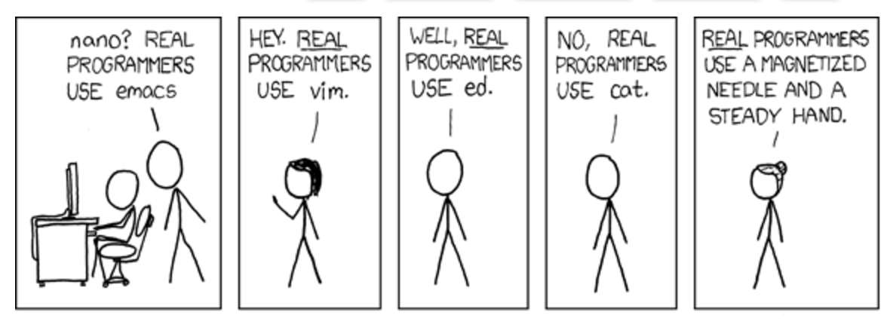

name: inverse layout: true class: center, middle, inverse --- # Efficient Computing Workflow Group ## First Ever Meeting .footnote[Course page: [github.com/epwalsh/ecw](https://github.com/epwalsh.com/ecw)] --- # Topic ## Improve Your Workflow with Vim --- layout:false .left-column[ ## About this Group ### What is ECW? ] .right-column[ ### The Efficient Computing Workflow Group From the email announcing the group two weeks ago: <span style = "font-size: 70%"> The Efficient Computing Workflow (ECW) group will discuss and present tools and techniques to speed up the process of writing, editing, and testing code while reducing the complexity of managing projects. </span> What is this group for? - We will hopefully discuss a wide range of tools and techniques to reduce the hassle in writing code. - Goal: Zen coding - achieving a flow between you and your computer that feels natural and simple. - Hope to figure out common difficulties and discuss or present useful solutions. <!-- <span style = "font-size: 70%"> </span> --> ] --- layout:false .left-column[ ## About this Group ### What is ECW? ### Who is it for? ] .right-column[ ### Who might be interested in ECW? - People who can easily think of their computer as a workbench. - People interested in improving their workflow. - People who are interested in sharing the tips (large and small) that they have picked along the way. - People who like coding - but hate clutter/repitition/etc. - You don't have to be efficient - you just want to be *more* efficient. - You don't have to know everything - you just have to get involved. <!-- <span style = "font-size: 70%"> </span> --> ] --- .left-column[ ## About this Group ### What is ECW? ### Who is it for? ### How did this happen? ] .right-column[ ### Where did the idea for this group come from? - Pete and I first talked about starting a "Text Editor Working Group" about a year ago. - We both had a similar perspective on Vim (more later) - the ability to mix languages and write code that makes your life easier clicked with both of us. - Talking about it again this semester, we figured that Vim was really just a part of what we liked - Vim was a customizable tool for agility and efficiency - that's what we liked about it. - Cast a wider net, catch more interesting fish - Lots of other tools that might do the same - we wanted to learn about, share, and use those too! ] --- layout: true class: center, middle, inverse --- # PROBLEM ## Improving Your Workflow is Hard --- layout: true class: center, middle --- <center> <img src="https://imgs.xkcd.com/comics/workflow.png" alt="goooooooollss" height ="400"/> </center> --- .left-column[ ## About this Group ### What is ECW? ### Who is it for? ### How did this happen? ] .right-column[ - Problem: when you try to modify your workflow with a new tool, if you can't get it working naturally quickly, you stop using it. - Not an issue with the tool, not an issue with the craftsperson - The issue is that people don't really use the tool the way we were trying to - **LOTS** of information about what software does - But very little information about how people actually use it. ] --- name: inverse layout: true class: center, middle, inverse --- #Goals <center> <img src="https://usatthebiglead.files.wordpress.com/2013/12/kompanyog.gif?w=1000" alt="goooooooollss" height ="300"/> </center> --- name: inverse layout: true class: center, middle --- # 1. Getting More Efficient --- # 2. Learning New Skills <center> <img src="http://www.christyrhall.com/wp-content/uploads/napoleon_1.jpg" alt="goooooooollss" height ="300"/> </center> --- # 3. Improving Old Skills --- layout: false .left-column[ ## About this Group ### What is ECW? ### Who is it for? ### How did this happen? ### Goals ] .right-column[ ## What Are Our Goals? My personal goals are *very very* flexible. Here are some things that we can all probably get behind: - **Fun, Friendly, Functional** - Hopefully we all enjoy the group. - A group about efficiency won't work if we can't talk about how we do things inefficiently. - A place that actually helps us become more efficient. - **Group goal** - work to create something that solves a common problem. - A Vim add-on, an R package, a JavaScript library? - Something that we can all work on, test, and refine. ] --- name: inverse layout: true class: center, middle, inverse --- # Vim: The text editor with modes ### (Oh, and a whole lot more) --- layout: false .left-column[ ## About this Group ## Vim ] .right-column[ ## First Topic: The Terminal and Vim <center>  </center> ### Writing code faster If you like keyboard shortcuts, you'll like Vim. - Getting around in the terminal - basic commands: pwd, ls, cd, mv, rm, cp, mkdir, etc - Vim: the text editor with *modes* - Learn the basics: run `$ vimtutor` - - Important point: no one's life is on the line - there are things I like and things I don't. <!-- <span style = "font-size: 70%"> </span> --> ]